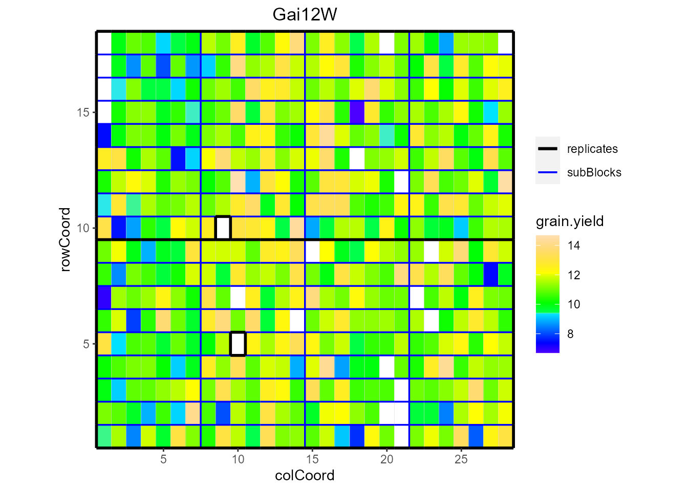
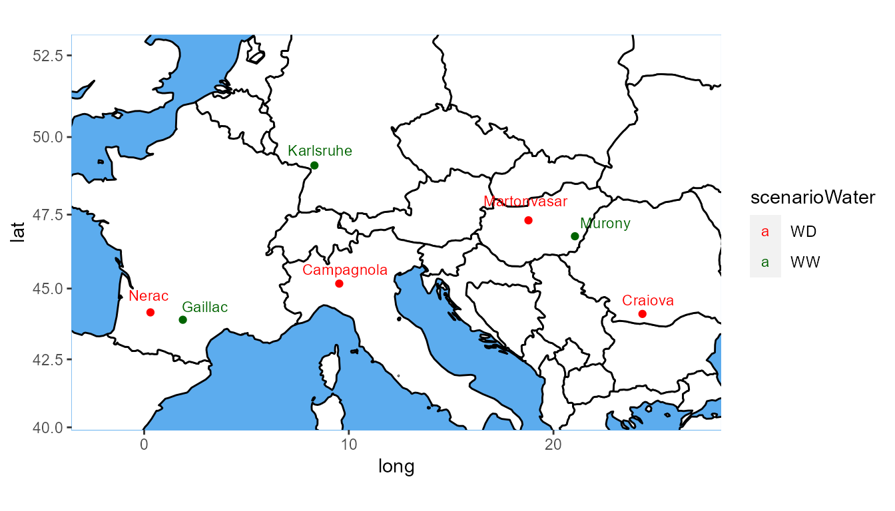

Modeling field trials using statgenSTA
Bart-Jan van Rossum
2021-03-29
Source:vignettes/statgenSTA.Rmd
statgenSTA.RmdThe statgenSTA Package
The statgenSTA (Single Trial Analysis) package is developed as an easy-to-use package for analyzing data of plant breeding experiments with many options for plotting and reporting the results of the analyses.
This vignette describes in detail how to prepare data for analysis, perform analyses using different modeling engines and extract the results from the models.
Data preparation
The first step when modeling field trial data with the statgenSTA package is creating an object of class TD (Trial Data). This object is used throughout the statgenSTA package as input for analyses.
Creating a TD object
A TD object can be created from a data.frame with the function createTD. This function does a number of things:
- Rename columns to default column names used by the functions in the statgenSTA package. For example, the column in the data containing variety/accession/genotype is renamed to “genotype.” Original column names are stored as an attribute of the
TDobject. - Convert column types to the default column types. For example, the column “genotype” is converted to a factor and “rowCoord” to a numeric column.
- Split the data into separate data.frames by trial. A
TDobject is alistofdata.frameswhere eachdata.framecontains the data for a single trial. If there is only one trial or no column trial is defined, the output will be alistwith only one item. - Add meta data to the
TDobject. This meta data is used to store background information about the trials. It consists of location, date of the experiment, longitude, latitude, trial design, plot width and plot length. None of these are strictly necessary for any analysis and meta data can therefore be safely ignored. However the meta data is used when plotting field layouts, plotting trials on a map and naming plots. Meta data can be added when creating theTDobject using the appropriate parameters increateTD(see 2.2). It is also possible to first create aTDobject without meta data and then add meta data using thegetMetaandsetMetafunctions (see 2.3).
After creating a TD object, data for new trials can be added to it using addTD. This function works in exactly the same way as createTD except that it adds data to an existing TD object instead of creating a new one.
Dropping one or more trials from a TD object can be done using the function dropTD.
Example
The use of the package is demonstrated using maize data from the European Union project DROPS (https://cordis.europa.eu/project/id/244374). The data is available from https://doi.org/10.15454/IASSTN (E. J. Millet et al. 2019) and the relevant data set is included as data.frame in the statgenSTA package.
The first step is loading the data into R.
data(dropsRaw)dropsRaw contains data for 256 maize hybrids, grown with two water regimes (irrigated or rainfed), in seven fields in 2012 and 2013. The hybrids are divided in four families. A selection of ten experiments and eight traits is made from the full data set. These ten experiments form a good representation of the full set of experiments covering the five scenarios described in E. Millet et al. (2016). Throughout this vignette in all examples the trait grain.yield will be analyzed. For a more detailed description of the contents of the data see help(dropsRaw).
For the example, first a TD object is created for experiments conducted in 2012. The data for 2013 is then added later on. In practice all this could be done in one go.
## Create a TD object containing for 2012.
dropsTD <- createTD(data = dropsRaw[dropsRaw$year == 2012, ],
genotype = "Variety_ID",
trial = "Experiment",
loc = "Site",
repId = "Replicate",
subBlock = "block",
rowCoord = "Row",
colCoord = "Column",
trLat = "Lat",
trLong = "Long")The TD object just created is a list with five items, one for each trial (combination of location, year and water regime) in the original data.frame. The column “Variety_ID” in the original data is renamed to “genotype” and converted to a factor. The columns “Replicate,” “block,” “loc” are renamed and converted likewise. The columns “Row” and “Column” are renamed to “rowCoord” and “colCoord” respectively. Simultaneously two columns “rowId” and “colId” are created containing the same information converted to a factor. This seemingly duplicate information is needed for spatial analysis. It is possible to define different columns as “rowId” and “colId” than the ones used as “rowCoord” and “colCoord.” Finally, the latitude and longitude of the trials is read from the column “Lat” and “Long” in the input and stored in dropsTD. The information about which columns have been renamed when creating a TD object is stored as an attribute of each individual data.frame in the object.
Meta data
The meta data will be a data.frame with five rows, one for each trial in dropsTD. The data.frame has the following columns:
| Content | Usage | |
|---|---|---|
| trLocation | Location | Default names for plots and reports |
| trDate | Date | |
| trDesign | Design | Model specification (see 3.1) |
| trLat | Latitude | Position in a map plot (see 2.6.2) |
| trLong | Longitude | Position in a map plot (see 2.6.2) |
| trPlWidth | Plot width | Ratio of width/height in a layout plot (see 2.6.1) |
| trPlLength | Plot length | Ratio of width/height in a layout plot (see 2.6.1) |
## Extract meta data from the TD object.
(dropsMeta <- getMeta(TD = dropsTD))
#> trLocation trDate trDesign trLat trLong trPlWidth trPlLength
#> Cam12R Campagnola <NA> NA 45.171 9.532 NA NA
#> Cra12R Craiova <NA> NA 44.116 24.348 NA NA
#> Gai12W Gaillac <NA> NA 43.910 1.890 NA NA
#> Kar12W Karlsruhe <NA> NA 49.100 8.320 NA NA
#> Ner12R Nerac <NA> NA 44.170 0.307 NA NAAfter extracting the meta data, it can be modified and then added back to the original TD object.
Add extra data to a TD object
To add the data for the 2013 trials to the TD object the function addTD can be used. This function is very similar to createTD with the only exception that a TD object has to be specified to which the new data is added.
## Add the data for the 2013 trials to the TD object.
dropsTD <- addTD(TD = dropsTD,
data = dropsRaw[dropsRaw$year == 2013, ],
genotype = "Variety_ID",
trial = "Experiment",
loc = "Site",
repId = "Replicate",
subBlock = "block",
rowCoord = "Row",
colCoord = "Column",
trLat = "Lat",
trLong = "Long")
## Inspect the meta data after the extra trial was added.
getMeta(TD = dropsTD)
#> trLocation trDate trDesign trLat trLong trPlWidth trPlLength
#> Cam12R Campagnola 2012-01-01 NA 45.171 9.532 NA NA
#> Cra12R Craiova 2012-01-01 NA 44.116 24.348 NA NA
#> Gai12W Gaillac 2012-01-01 NA 43.910 1.890 NA NA
#> Kar12W Karlsruhe 2012-01-01 NA 49.100 8.320 NA NA
#> Ner12R Nerac 2012-01-01 NA 44.170 0.307 NA NA
#> Kar13R Karlsruhe <NA> NA 49.100 8.320 NA NA
#> Kar13W Karlsruhe <NA> NA 49.100 8.320 NA NA
#> Mar13R Martonvasar <NA> NA 47.311 18.778 NA NA
#> Mur13R Murony <NA> NA 46.780 21.050 NA NA
#> Mur13W Murony <NA> NA 46.780 21.050 NA NANote that the meta data now contains information about all ten trials. Only for the 2012 trials the trial date is filled. Since this information is not used in any of the analyses in the package we leave this.
Summarizing a TD object
The summary function can be used to get an idea of the content of the data in the TD object. Multiple traits can be summarized at once but for clarity here a summary is only made for grain.yield for a single trial.
## Create a summary for grain yield in Gai12W.
summary(dropsTD,
trial = "Gai12W",
traits = "grain.yield")
#>
#> Summary statistics for grain.yield in Gai12W
#>
#> grain.yield
#> Number of observations 483
#> Number of missing values 19
#> Mean 11.23
#> Median 11.22
#> Min 6.71
#> Max 14.68
#> First quantile 10.38
#> Third quantile 12.09
#> Variance 1.845Using the default options, nine summary statistics are printed, but many more are available. These can be accessed using the parameter what in the summary function. For a full list of available statistics, use help(summary.TD). It is also possible to output all statistics using what = "all".
It is possible to summarize the data in a TD object for different groups. This can be done using the parameter groupBy. It will display three main summary statistics per group. Again, more statistics can be displayed using the parameter what.
## Create a summary per family in Gai12W
summary(dropsTD,
trial = "Gai12W",
traits = "grain.yield",
groupBy = "geneticGroup")
#>
#> Summary statistics for grain.yield in Gai12W grouped by geneticGroup
#>
#> Stiff_Stalk Iodent Other Lancaster
#> Number of observations 107 79 210 87
#> Mean 11.85 11.42 10.61 11.80
#> Standard deviation 1.320 0.964 1.337 1.110
Plotting a TD object
Several plots can be made to further investigate the contents of a TD object.
In all plots the default colors for both genotype groups and trial groups are chosen from a predefined color palette. For genotype groups the color palette is “Dark 2,” for trial groups it is “Alphabet.” See here for an overview of these colors.
It is possible to specify different colors for genotype groups and trial groups per plot using the options colGeno and colTrial respectively. Also, more conveniently, the default colors can be set using the options statgen.genoColors and statgen.trialColors.
## Set default colors for genotypes and trials.
options("statgen.genoColors" = c("blue", "green", "yellow"))
options("statgen.trialColors" = c("red", "brown", "purple"))If a plot has more genotype groups than the number of colors specified as default colors, the default colors will be ignored and topo.colors() will be used instead. For trial groups this is done in a similar way.
Layout plot
The default plot creates plots for the layout of all trials in the TD object. This can be restricted to selected trials using the trials parameter. The width and length of the plot are derived from “trPlWidth” and “trPlLength” in the meta data if these are available. If repId was specified when creating the TP object, replicate blocks are delineated by a black line. If subBlock was specified, then sub blocks are delineated by a blue line. This type of plot allows checking the design of the experiment.
plot(dropsTD,
trials = "Gai12W")
Note that the default title of the plot is the name of the trial. This can be manually changed using the title option.
This plot can be extended by highlighting interesting genotypes in the layout. By default the default ggplot colors are used for highlighting these genotypes. Custom colors can be specified using the parameter colHighlight.
## Plot the layout for Gai12W.
## Highlight genotypes A3 and 11430 in red and blue.
plot(dropsTD,
trials = "Gai12W",
highlight = c("A3", "11430"),
colHighlight = c("red", "blue"))
It is also possible to color the sub blocks within the field. By default the default ggplot colors are used for coloring these sub blocks. Custom colors can be specified using the parameter colSubBlock.
## Plot the layout for Gai12W.
## Color sub blocks using polychrome colors for high contrast.
## Colors are specified here since this color palette is only available as such
## from R > 4.0.
cols <- c("#5A5156", "#E4E1E3", "#F6222E", "#FE00FA", "#16FF32", "#3283FE",
"#FEAF16", "#B00068", "#1CFFCE", "#90AD1C", "#2ED9FF", "#DEA0FD",
"#AA0DFE", "#F8A19F", "#325A9B", "#C4451C", "#1C8356", "#85660D",
"#B10DA1", "#FBE426", "#1CBE4F", "#FA0087", "#FC1CBF", "#F7E1A0",
"#C075A6", "#782AB6", "#AAF400", "#BDCDFF", "#822E1C", "#B5EFB5",
"#7ED7D1", "#1C7F93", "#D85FF7", "#683B79", "#66B0FF", "#3B00FB")
plot(dropsTD,
trials = "Gai12W",
colorSubBlock = TRUE,
colSubBlock = cols)
Highlighting genotypes and coloring subBlocks cannot be done simultaneously. If both options are specified, only highlighting is done.
It is possible to add the labels of the genotypes to the layout.
## Plot the layout for Gai12W, label the genotypes.
plot(dropsTD,
trials = "Gai12W",
showGeno = TRUE)
We can visualize the raw data of a given trait on the layout, as a heatmap. This type of plot gives a first indication of the spatial variability for a given trial. This can be further investigated with the spatial modeling. Missing plots are indicated in white.
## Plot the layout for Gai12W, show raw data for grain yield.
plot(dropsTD,
trials = "Gai12W",
traits = "grain.yield")
Map plot
A second type of plot displays the trial locations on a map. This plot is made based on trLat and trLong in the meta data. If latitude or longitude is not available for a certain location, then this location is not plotted. If the locations are very close together, the resulting map can become quite small. The parameters minLatRange and minLongRange can be used to extend the minimum range of latitude and longitude respectively to address this issue. For map plots where there are many trials close together, the trial names can be left out of the plot by specifying printTrialNames = FALSE.
## Plot the locations of the trials on a map.
plot(dropsTD,
plotType = "map")
It is possible to color the trials by a variable in the TD object using colorTrialBy. Colors may be specified in colTrial.
## Plot the locations of the trials on a map.
## Color the trials by water scenario.
plot(dropsTD,
plotType = "map",
colorTrialBy = "scenarioWater",
colTrial = c("red", "darkgreen"))
Box plot
Boxplots can be made to get an idea of the contents of the data in the TD object. By default a box is plotted per trial in the data for the specified traits. Boxplots for multiple traits can be made at once.
Boxplots can be made to visually assess the variability of the trait(s) in the TD object. By default a box is plotted per trial for the specified trait. Boxplots for multiple traits can be made at once.
## Create a boxplot for grain yield.
plot(dropsTD,
plotType = "box",
traits = "grain.yield")
The trials in the boxplot can be grouped using the parameter groupBy. Colors can be applied to groups within trials using the parameter colorTrialBy. As in other plots colTrial may be used to specify the colors used. The boxes for the (groups of) trials can be ordered using orderBy. Boxes can be ordered alphabetically (orderBy = alphabetic), and by ascending (orderBy = ascending) and descending (orderBy = descending) trait mean.
## Create a boxplot for grain yield with boxes grouped by year
## Color the boxes by scenario within years.
plot(dropsTD,
plotType = "box",
traits = "grain.yield",
groupBy = "year",
colorTrialBy = "scenarioFull")
Correlation plot
Another plot that can be made is a plot of the correlations between the trials for a specified trait. The order of the plotted trials is determined by clustering them and plotting closely related trials close to each other.
## Create a correlation plot for grain yield.
plot(dropsTD,
plotType = "cor",
traits = "grain.yield")
Scatter plot matrix
Finally a scatter plot matrix can be made. The lower left of the matrix contains scatter plots between trials. The diagonal contains histograms of the data per trial. It is possible to calculate the correlation between trials and print it in the scatter plots by specifying addCorr. addCorr takes the values “tl” (top left), “tr” (top right), “bl” (bottom left) or “br” (bottom right). This indicates where the correlation is placed in each of the scatter plots. It is possible to color the genotypes and trials in the plots by a variable in the TD object by specifying colorTrialBy and colorGenoBy respectively.
## Create a scatter plot matrix for grain yield.
## Color trials by scenario and genotypes by family.
plot(dropsTD,
plotType = "scatter",
traits = "grain.yield",
colorTrialBy = "scenarioFull",
colorGenoBy = "geneticGroup")
Modeling
To get genotypic predictions we want to accurately separate the genetic effects from the spatial effects and further design factors. To do this, for each trial a model can be fitted for the trait we are interested in. In statgenSTA models can be fitted using SpATS (Rodríguez-Álvarez et al. 2018), lme4 (Bates et al. 2015), or ASReml (Butler et al. 2017). For models with row column or resolvable row column design, SpATS is the default engine, for the other models lme4. This can always be overruled by specifying the function parameter engine.
Models can be fitted on the trial data in a TD object using the function fitTD. The exact model fitted depends on the design of the trial (see 3.1). The design can be given as a parameter in the function or included in the meta data of the TD object as described in 2.3. In the former case, the same model will be fitted for all trials, in the latter, different models can be fitted for different trials. If both are available the function parameter will always be leading.
The output of fitTD is an object of class STA (Single Site Analysis), a list of fitted models with one item for each trial the model was fitted for.
Model types
Models can be fitted for five different trial designs. These are listed in the following table with their respective model specifications.
| design | code | model fitted |
|---|---|---|
| incomplete block design | ibd | trait = subBlock + genotype + \(\epsilon\) |
| resolvable incomplete block design | res.ibd | trait = repId + repId:subBlock + genotype + \(\epsilon\) |
| randomized complete block design | rcbd | trait = repId + genotype + \(\epsilon\) |
| row column design | rowcol | trait = rowId + colId + genotype + \(\epsilon\) |
| resolvable row column design | res.rowcol | trait = repId + repId:rowId + repId:colId + genotype + \(\epsilon\) |
In the models above, fixed effects are indicated in italics whereas random effects are indicated in bold. genotype can be fitted as fixed or as random effect depending on the value of the parameter what. Extra fixed effects may be fitted using the parameter covariates.
If SpATS is used as modeling engine, an extra spatial term is always included in the model (see 3.2). A spatial term is also included when the modeling engine is asreml and the function parameter spatial is set to TRUE.
Using the TD object dropsTD from the previous section, a model for the trial Gai12W and trait grain.yield can now be fitted on the data. The trial was set up using a resolvable row column design. This is specified in fitTD using the parameter design. Since engine is not supplied as a parameter, SpATS is used for fitting the model.
## Fit a single trial model using a model based on a resolvable row column design.
modDropsSp <- fitTD(TD = dropsTD,
trials = "Gai12W",
traits = "grain.yield",
design = "res.rowcol")Note that by not supplying the what argument to the function, two models are fitted, one with genotype as a fixed effect and one with genotype as a random effect. The results of both these models are stored in the STA object modDropsSp. This is very useful for extracting different results from the model later on. A trade-off is that fitting two models takes more time than fitting only one so when fitting models on large data sets it is sensible to explicitly define what if only a subset of the results is needed as output.
## Fit a single trial model with genotype as random effect.
modDropsSp2 <- fitTD(TD = dropsTD,
trials = "Gai12W",
traits = "grain.yield",
what = "random",
design = "res.rowcol")Spatial models
When using SpATS as a modeling engine for fitting a model, an extra spatial component is always included in the model. This spatial component is composed using the PSANOVA function in the SpATS package which uses 2-dimensional smoothing with P-splines as described in Lee, Durbán, and Eilers (2013) and in Rodríguez-Álvarez et al. (2018). See help(PSANOVA, SpATS) for a detailed description. The parameters nseg and nest.div of PSANOVA can be modified using the control parameter in fitTD.
The default number for the number of segments is (number of columns / 2, number of rows / 2). Fitting the model in the previous section specifying the number of segments for columns and rows as 28 and 18 respectively, works as follows:
## Fit a spatial single trial model using SpATS.
## Manually specify the number of segments for rows and columns.
modDropsSp3 <- fitTD(TD = dropsTD,
trials = "Gai12W",
traits = "grain.yield",
design = "res.rowcol",
control = list(nSeg = c(28, 18)))Alternatively, spatial models can be fitted using asreml as modeling engine and setting the parameter spatial = TRUE. In this case seven models are fitted and the best model, based on a goodness-of-fit criterion, either AIC or BIC. The default is AIC, this can be modified the control parameter in fitTD.
The seven models fitted largely depend on the trial design. On top of the model described in the previous section extra random terms are added. These extra random terms depend on the structure of the data. If the trial has a regular structure, i.e. all replicates appear the same amount of times in the trial, the following combinations of random and spatial terms are fitted:
| Random part | Spatial part |
|---|---|
| random effects based on design | none |
| random effects based on design | AR1(rowId):colId |
| random effects based on design | rowId:AR1(colId) |
| random effects based on design | AR1(rowId):AR1(colId) |
| random effects based on design + nugget | AR1(rowId):colId |
| random effects based on design + nugget | rowId:AR1(colId) |
| random effects based on design + nugget | AR1(rowId):AR1(colId) |
If the design is not regular the following combinations of random and spatial terms are fitted:
| Random part | Spatial part |
|---|---|
| random effects based on design | none |
| random effects based on design | exp(rowCoord):colCoord |
| random effects based on design | rowCoord:exp(colCoord) |
| random effects based on design | iexp(rowCoord, colCoord) |
| random effects based on design + nugget | exp(rowCoord):colCoord |
| random effects based on design + nugget | rowCoord:exp(colCoord) |
| random effects based on design + nugget | iexp(rowCoord,colCoord) |
Fitting a model similar to the one above using asreml with BIC as goodness-of-fit criterion works as follows:
if (requireNamespace("asreml", quietly = TRUE)) {
## Fit a spatial single trial model using asreml.
modDropsAs <- fitTD(TD = dropsTD,
trials = "Gai12W",
traits = "grain.yield",
design = "res.rowcol",
spatial = TRUE,
engine = "asreml",
control = list(criterion = "BIC"))
}The fitted models and the best model are stored in the output together with a summary table with details on the fitted models.
if (exists("modDropsAs")) {
## Overview of fitted models.
print(modDropsAs$Gai12W$sumTab$grain.yield, digits = 2, row.names = FALSE)
}
#> spatial random AIC BIC H2 row col error correlated error converge
#> none <NA> 610 627 0.83 NA NA 4.1e-01 NA TRUE
#> AR1(x)id <NA> 611 633 0.83 -0.048 NA 4.0e-01 NA TRUE
#> id(x)AR1 <NA> 612 633 0.83 NA 0.039 4.1e-01 NA TRUE
#> AR1(x)AR1 <NA> 613 639 0.83 -0.042 0.026 4.1e-01 NA TRUE
#> AR1(x)id units 611 633 0.83 -0.048 NA 6.5e-07 0.404 TRUE
#> id(x)AR1 units 611 632 0.78 NA 0.403 2.8e-01 0.038 TRUE
#> AR1(x)AR1 units 582 607 0.84 0.980 0.850 4.0e-01 0.177 TRUEAs the overview shows, the best model, the model with the lowest BIC, is AR1(x)AR1 with units in the random part of the model.
Model summary
Since genotype has been fitted both as fixed and as random factor in modDropsSp it is possible to calculate both the Best Linear Unbiased Estimators (BLUEs) and the Best Linear Unbiased Predictors (BLUPs). Therefore both are printed in the summary of the model together with their respective standard errors.
## Set nBest to 5 to limit the output to the best 5 genotypes.
summary(modDropsSp,
nBest = 5)
#> Summary statistics
#> ==================
#>
#> Summary statistics for grain.yield in Gai12W
#>
#> grain.yield
#> Number of observations 483
#> Number of missing values 19
#> Mean 11.23
#> Median 11.22
#> Min 6.71
#> Max 14.68
#> First quantile 10.38
#> Third quantile 12.09
#> Variance 1.845
#>
#>
#> Estimated heritability
#> ======================
#>
#> Heritability: 0.84
#>
#> Predicted means (BLUEs & BLUPs)
#> ===============================
#> Best 5 genotypes
#> BLUEs SE BLUPs SE
#> Lo1261 13.97797 0.47111 13.65462 0.4329
#> Lo1253 13.90798 0.47146 13.44686 0.4350
#> Lo1223 13.71245 0.47115 13.27799 0.4337
#> DKMBST 13.66095 0.47214 13.23978 0.4346
#> HMV5422 13.60944 0.67929 13.02878 0.5784Model plots
Two types of plots can be made for fitted models.
Base plots
The first is a series of four plots, a histogram of the residuals, normal quantiles of the residuals, a scatter plot of residuals against fitted values and a scatter plot of absolute value of residuals against fitted values. These plots can be made by calling plot on the STA object. Plots can be made for multiple trials and multiple traits simultaneously, either for the model with genotype as fixed effect or for the model with genotype as random effect. By default plots are made for all trials and all traits, but this can be restricted using the parameters trials and traits. If only one model is fitted the results of the fitted model will be plotted. In case both models were fitted, as a default the results will be plotted for the model with genotype fixed. This can be changed using the parameter what.
## Base plots for the model with genotype fitted as random effect.
plot(modDropsSp,
plotType = "base",
what = "random")
Spatial plots
The second type of plot consists of five plots, spatial plots of the raw data, fitted values, residuals and either BLUEs or BLUPs, and a histogram of the BLUEs or BLUPs. If SpATS was used for modeling an extra plot with the fitted spatial trend is included. The spatial trend can be displayed on the original scale (spaTrend = "raw") or as percentega (spaTrend = "percentage"). In the latter case the spatial trend is scaled (i.e., divided by the average of the observed response variable of interest across the field) and displayed as percentage. The call for creating these plots differs from the base plots only by an extra parameter plotType = "spatial". Note that spatial plots can only be made if spatial information, i.e. rowCoord and colCoord, is available in the TD object.
## Spatial plot for the model with genotype fitted as fixed effect.
plot(modDropsSp,
plotType = "spatial")
## Spatial plot for the model with genotype fitted as fixed effect.
## Display the spatial trend as a percentage.
plot(modDropsSp,
plotType = "spatial",
spaTrend = "percentage")
Outlier detection
After fitting a model, it is possible to run an outlier detection on the results. This outlier detection che cks the residuals in the fitted model and compares them to a limit. Observations with a residual higher than this limit are marked as outliers. The default limit is calculated based on the number of observations in the data. Setting a custom limit is also possible.
## Outlier detection for the model with genotype fitted as random.
outliers <- outlierSTA(modDropsSp,
traits = "grain.yield",
what = "random")
#> Large standardized residuals.
#>
#> trial genotype trait value res outlier
#> Gai12W B105 grain.yield 7.513174 -2.883388 TRUEThe output of the outlier detection function is a data.frame with the outliers and of vector of indices of the outliers in the original data. This vector can be used for removing outliers from the data.
It is possible to run outlier detection on a model with genotype fitted as fixed, but when doing so it is only possible to detect outliers in genotypes that are replicated in the data. For unreplicated genotypes the residual will always be 0 and so these will never be marked as outliers.
To get an idea of the magnitude of the outliers, the parameter commonFactors can be used to see the values of observations with similar characteristics. In the example below, for all outliers also the other observations for the same genotype are shown.
## Outlier detection for the model with genotype fitted as random.
## A custom limit is used and commonFactors set to genotype.
outliers <- outlierSTA(modDropsSp,
traits = "grain.yield",
what = "random",
rLimit = 2.7,
commonFactors = "genotype")
#> Large standardized residuals.
#>
#> trial genotype trait value res outlier
#> Gai12W A347 grain.yield 8.767218 -2.769882 TRUE
#> Gai12W A347 grain.yield 10.448529 1.858846 FALSE
#> Gai12W B105 grain.yield 7.513174 -2.883388 TRUE
#> Gai12W B105 grain.yield 9.331618 1.446252 FALSEModel reports
For STA objects there is a report function available in the statgenSTA package. This function creates a pdf report summarizing the main results of the fitted model. Also the tex file and figures used for generating the pdf report are saved. By editing the tex file it is possible to modify the report to ones needs, creating high flexibility.
When no outfile is specified, reports will be created with a default names, e.g. “modelReport_trial_trait_fixed_timestamp.pdf,” in the current working directory. The parameter outfile can be used to change the name and location of the report. The value of this parameter should be a valid location and name for a pdf file, i.e. including the postfix “.pdf.” Non-existing directories are created by the report function. When an outfile is supplied, trial, trait and modeltype (fixed or random) are concatenated to it in the name of the report.
The reports contains general information on the model fitted, a summary of the results, the plots described in the previous section, a list of best (highest BLUEs or BLUPs) genotypes and a scatter plot of all genotypes and their BLUEs or BLUPs. For some traits a low value might mean a genotype is performing well. To correctly show the best genotypes in the report in this case, set the parameter descending to TRUE in the report function.
## Create a report in the current working directory
report(modDropsSp)
## Create a report for the model with genotype fitted as random.
report(modDropsSp,
outfile = "./myReports/dropsReport.pdf",
what = "random")Reporting for an STA object can be done for multiple trials, traits and model types simultaneously. For each combination of trial, trait and model type, a separate .pdf report will be created. Parameters traits, trials and what can be used for specifying the models for which the reports should be made.
Extracting model results
After fitting a model, various results can be extracted or calculated from the fitted model using the function extractSTA. This can be anything from a single result for one trait and one trial to a list of different results for all models in an STA object. The results that can be extracted depend on the type of model fitted and sometimes on the modeling engine as well. For example, BLUEs can only extracted if genotype was fitted as a fixed effect. On the other hand, BLUPs and heritabilities can only be calculated and extracted if genotype was fitted as random effect.
All results that can be extracted are shown in the table below. In the first column is the result. This is also the value to be used for the parameter what in extractSTA needed to extract the corresponding result. The second column shows what model needs to be fitted in order to be able to extract the result. Here F stands for genotype as fixed effect and R for genotype as random effect. The third column gives a short description of the result that will be extracted and, where needed, also states for which modeling engines it can be extracted. The final columns shows whether the result can be extracted as a data.frame or not. Results that cannot be extracted as a data.frame will be extracted as a list. E.g. BLUES by default will be extracted in a data.frame and varCompF as a list. When extracting multiple results at once, the result will always be a list. E.g., when extracting BLUEs and BLUPs the result we be a list with two items per trial, named BLUEs and BLUPs.
| result | model | description | asDataFrame |
|---|---|---|---|
| BLUEs | F | Best Linear Unbiased Estimators | yes |
| seBLUEs | F | standard errors of the BLUEs | yes |
| ue | F | unit errors - only for lme4 and asreml | yes |
| varCompF | F | variance components for the model with genotype as fixed component | |
| fitted | F | fitted values for the model with genotype as fixed component | yes |
| residF | F | residuals for the model with genotype as fixed component | yes |
| stdResF | F | standardized residuals for the model with genotype as fixed component | yes |
| wald | F | results of the wald test - only for lme4 and asreml | |
| CV | F | Coefficient of Variation - only for lme4 and asreml | yes |
| rDfF | F | residual degrees of freedom for the model with genotype as fixed component | yes |
| sed | F | standard error of difference - only for asreml | |
| lsd | F | least significant difference - only for asreml | |
| BLUPs | R | Best Linear Unbiased Predictors | yes |
| seBLUPs | R | standard errors of the BLUPs | yes |
| heritability | R | broad sense heritability | yes |
| varCompR | R | variance components for the model with genotype as random component | |
| varGen | R | genetic variance component | yes |
| varErr | R | residual variance component | yes |
| varSpat | R | spatial variance components - only for SpATS | |
| rMeans | R | fitted values for the model with genotype as random component | yes |
| ranEf | R | random genetic effects | yes |
| residR | R | residuals for the model with genotype as random component | yes |
| stdResR | R | standardized residuals for the model with genotype as random component | yes |
| rDfR | R | residual degrees of freedom for the model with genotype as random component | yes |
| effDim | R | effective dimensions - only for SpATS | |
| ratEffDim | R | ratios of the effective dimensions - only for SpATS |
Note that when predictions are made (e.g. when extracting BLUEs, BLUPs or their standard errors), those predictions are always obtained by averaging over all levels of the fixed factors in the model.
Using what = "all" in the function call, extracts all results possible for the fitted model. This is also the default.
Below are some examples of extracting results from a fitted model. Recall that modDropsSp contains two fitted models, one with genotype as fixed effect and one with genotype as random effect.
## Extract BLUEs.
BLUEsDrops <- extractSTA(STA = modDropsSp,
what = "BLUEs")
## Extract BLUEs and BLUPs.
predDrops <- extractSTA(STA = modDropsSp,
what = c("BLUEs", "BLUPs"))Note that BLUEsDrops is a data.frame, whereas predDrops is a list with one item, since we fitted a model for only one trial.
Adding extra variables
The data.frame BLUEsDrops consists of only three columns, genotype, trial and grain.yield. If the model would have been fitted for multiple traits all these traits would become columns in the data.frame. It might be useful to add extra columns from the data used to fit the model to the output for use in further analysis of the data. This can be achieved using the paramater keep in extractSTA. To include the water scenario in the output, useful for using the BLUEs for a GxE analysis, use the following command:
## Extract BLUEs from the fitted model.
BLUEsDrops2 <- extractSTA(STA = modDropsSp,
what = "BLUEs",
keep = "scenarioWater")
head(BLUEsDrops2)
#> genotype trial scenarioWater grain.yield
#> 1 11430 Gai12W WW 11.708511
#> 2 A3 Gai12W WW 11.554153
#> 3 A310 Gai12W WW 11.072887
#> 4 A347 Gai12W WW 9.511043
#> 5 A374 Gai12W WW 10.908948
#> 6 A375 Gai12W WW 10.823341Multiple columns can be included in the output in this way. Note that not every column from the original TD object can be included in the extracted data. Only columns that, for each genotype, have only one value per trial can be included. For example, the column repId containing replicates, that has several different values for a single genotype within each trial, cannot be included. When trying to do so it will be ignored with a warning.
It is however possible to include repId when extracting fitted values, since for each observation in the original data a fitted value is computed.
## Extract fitted values from the model.
## Add repId and family to the output.
fitVals <- extractSTA(STA = modDropsSp,
what = "fitted",
keep = c("repId", "geneticGroup"))
head(fitVals)
#> genotype trial repId geneticGroup grain.yield
#> 1 DE811 Gai12W 1 Stiff_Stalk 9.796469
#> 2 UH_P089 Gai12W 1 Iodent 11.133917
#> 3 W182E Gai12W 1 Other 8.933867
#> 4 Lp5 Gai12W 1 Stiff_Stalk 11.975927
#> 5 F7082 Gai12W 1 Other 8.924579
#> 6 Lo1087 Gai12W 1 Stiff_Stalk 13.206323Prepare data for GxE analysis
Performing a GxE analysis on can be done using the statgenGxE package. This package uses the same input format for its analyses as the statgenSTA package.
To use the BLUEs or BLUPs from the fitted model in a GxE analysis they can easily be converted into a TD object using the function STAtoTD. This function creates a TD object from a fitted model including one or more of the following: BLUEs, standard errors of BLUEs, BLUPs and standard errors of BLUPs. Optionally, a column wt with weights (calculated as \((1 / seBLUEs)^2\)) can be added as well. In the same way as described in the previous section extra columns can be added to the output using the parameter keep.
## Fit a model for all trials with genotype as fixed factor.
modDropsSpTot <- fitTD(TD = dropsTD,
traits = "grain.yield",
what = "fixed",
design = "res.rowcol")
## Create a TD object containing BLUEs and standard errors of BLUEs.
TDGxE <- STAtoTD(STA = modDropsSpTot,
what = c("BLUEs", "seBLUEs"))
## Add weights and water scenario to the output.
TDGxE2 <- STAtoTD(STA = modDropsSpTot,
what = c("BLUEs", "seBLUEs"),
keep = "scenarioWater",
addWt = TRUE)